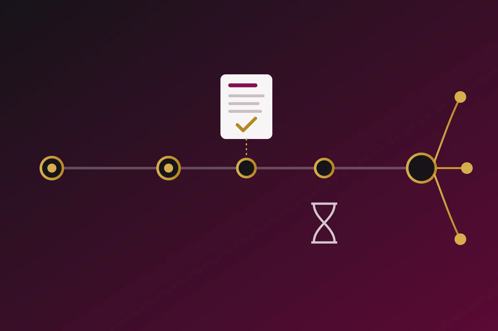

A PCT application is not a world patent. It is a way to buy time and a first opinion on patentability before committing to expensive national filings. Whether it saves money depends on how many countries you need and how quickly you need a grant.
The Patent Cooperation Treaty lets an applicant file one international application that has effect in more than 150 contracting states. The applicant receives an international search report and a written opinion, then decides later which countries to enter. Those benefits are real. So are the extra fees and the extra time. This article explains when the PCT route earns its cost and when a direct filing is the better choice.
How the PCT timeline works
- Month 0. The first application sets the priority date. It might be a US or Indian provisional application, a first filing at the EPO, or a national filing such as one at the UK IPO.
- Month 12. The PCT application must be filed to claim that priority. Direct filings under the Paris Convention share the same 12 month limit.
- About month 16. The International Searching Authority usually issues the international search report and written opinion by this point. The applicant can amend the claims under Article 19 within two months of the report or by month 16, whichever is later.
- Month 18. WIPO publishes the application.
- Month 22. The usual last date to demand international preliminary examination under Chapter II, which allows argument and amendment before an examiner.
- Month 30 or 31. National phase entry. Most countries, including the United States, China and Japan, apply 30 months from priority. India and the EPO allow 31 months. China accepts entry up to 32 months on payment of a surcharge.
When a PCT application makes sense
A useful rule of thumb is to consider the PCT when protection may be needed in more than three countries, or when the countries are not yet known. For a small number of certain markets, direct filings are often cheaper and faster. The PCT usually earns its cost in these situations.
- Many markets. One filing preserves rights everywhere for up to 30 or 31 months. National fees, translations and local attorney costs are deferred until the business knows where it sells.
- Uncertain markets or funding. A startup that expects to raise money or find a licensee can postpone the largest costs by about 18 months.
- A useful search early. The search report and written opinion show the strength of the claims before national spending begins. A negative opinion is cheap information. It can justify narrowing the claims or dropping the application before costs multiply.
- Faster examination later. A positive written opinion or preliminary examination report can support accelerated examination in many offices through the PCT Patent Prosecution Highway.
When a PCT application wastes money
If the applicant will only ever file in one or two countries, the PCT adds international fees and roughly 18 months of delay before national examination begins. The patent term does not pause for that delay. In India, the United States and Europe, the term generally runs 20 years from the filing date of the application, which for a PCT national phase is the international filing date. By the time a PCT application enters the national phase, about a year and a half of the term has already run. If examination then takes several years, the granted patent may have well under 15 years left. The United States partly compensates for office delays through patent term adjustment, but India and Europe do not.
For one or two known markets, filing directly in those countries within the 12 month priority year usually gives a quicker grant and lower total cost. The same logic applies when a fast grant matters commercially, for example to enforce against an early copier.
Choose the International Searching Authority deliberately
The receiving office decides which International Searching Authorities are available. Applicants filing in Europe normally receive an EPO search. US applicants filing at the USPTO can choose among several authorities, and many choose the USPTO, the EPO or the Korean office depending on cost and target markets. Applicants filing at the Indian Patent Office can choose the Indian Patent Office, the EPO, the USPTO, the Japan Patent Office, the Swedish, Austrian and Australian offices or CNIPA. The choice affects cost and later strategy.
- Indian Patent Office. The search fee is much lower, with a further reduction for eligible applicants. Choosing India as ISA or IPEA is also a ground for expedited examination in the Indian national phase.
- EPO. The search fee is higher. If the application later enters the European phase, the EPO does not run a supplementary European search, which saves that fee and time. An EPO opinion is also widely accepted for PCT PPH requests.
- Other authorities. The best choice often follows the most important market, because a positive opinion from a partner office is most useful where that office has a PPH arrangement.
Using a positive search to cut prosecution cost
United States
The USPTO accepts PCT PPH requests based on a positive written opinion or preliminary examination report from partner authorities. Track One prioritized examination is not available when a PCT application enters the US national stage under 35 U.S.C. section 371. It becomes available only later, with a request for continued examination. An applicant who wants Track One from the start can instead file a bypass continuation of the PCT application under section 111(a).
Europe
When the EPO was the search authority, the European phase can move quickly because no new search is needed. The applicant can also request accelerated prosecution under PACE without an official fee, or use a PPH request based on work from a partner office. After grant, choosing a Unitary Patent gives one renewal fee for the 18 participating EU states, while countries such as the UK, Spain and Poland still need a national European patent and national renewal fees.
PCT Patent Prosecution Highway in general
Under PCT PPH programmes, an applicant whose claims were found novel, inventive and industrially applicable in the written opinion or preliminary examination report can ask participating national offices to accelerate examination. The national claims must correspond to the claims found allowable. Offices such as the USPTO, the EPO, the JPO, KIPO and CNIPA take part in PPH networks, although the partner offices and conditions differ. The result is usually fewer office actions and lower attorney costs.
India
India is not a member of the Global PPH. Its PPH arrangement with the Japan Patent Office was launched in December 2019 as a three year pilot, with limits on technology fields and annual numbers. Check with IP India whether it is still accepting requests before relying on it. For Indian national phase applications, the practical fast route is expedited examination in Form 18A. Eligible grounds include choosing India as ISA or IPEA and startup status.
South East Asia
The ASEAN Patent Examination Co-operation, known as ASPEC, lets applicants in Brunei, Cambodia, Indonesia, Laos, Malaysia, the Philippines, Singapore, Thailand and Vietnam use the search and examination results of one participating office to support examination in another. A PCT version accepts a written opinion or preliminary examination report prepared by an ASEAN authority, which currently means Singapore or the Philippines. ASPEC+, launched in April 2026, lets several participating offices work on the same application together with committed timelines for the first office action.
Cost savers inside the PCT route
- Use Article 19 or Chapter II amendments to fix claims once, before they are copied into many national applications.
- Natural persons who are nationals and residents of India qualify for a 90 per cent reduction in certain PCT fees. Companies do not.
- Check foreign filing licence rules in the country where the invention was made. For inventions made in the United States, 35 U.S.C. section 184 requires a foreign filing licence before filing abroad within six months of a US filing, or before any first filing abroad. The USPTO normally grants it with the filing receipt of a US application. Several European countries have their own rules. The UK restricts first filings abroad for certain sensitive inventions. France requires European and PCT applications by French applicants to be filed through INPI unless they claim a French priority. Germany restricts inventions that contain state secrets.
- In India, section 39 of the Patents Act applies. If the PCT claims priority from an Indian application, file it only after six weeks have passed with no secrecy direction. If the PCT is the first filing, even at the Indian Patent Office as receiving office, obtain written permission in Form 25 first. The Delhi High Court confirmed this in Puneet Kaushik v Union of India.
- Decide country by country at month 28, not month 30, so translations and local instructions are not rushed.
Foreign applicants entering India from a PCT application can read our page on India patent filing for foreign applicants. Indian companies can read about our US, EP and PCT patent support. Startups watching every rupee should also see our note on protecting IP on a startup budget.
Frequently asked questions
Is a PCT application worth it for only one foreign country?
Usually not. A direct filing in that country within 12 months of the first application is normally cheaper and leads to an earlier grant. The PCT may still help if the applicant needs an early search opinion or more time to decide.
Does a PCT application extend the 20 year patent term?
No. In most countries the term runs from the international filing date. The PCT delays national examination, so it shortens the period during which a granted patent can be enforced.
Can a positive PCT search report speed up examination in India?
Not through the Global PPH, because India is not a member, and its PPH programme with Japan is limited. Applicants who chose the Indian Patent Office as ISA or IPEA can request expedited examination in the Indian national phase.
Official sources
- WIPO Patent Cooperation Treaty resources
- WIPO PCT fee tables
- USPTO Track One prioritized examination
- Unified Patent Court member states
- IPOS guide to the ASEAN Patent Examination Co-operation
- Baker McKenzie note on the launch of ASPEC+
- FICPI report on the India and Japan PPH programme
- The Patents Act, 1970, published by IP India